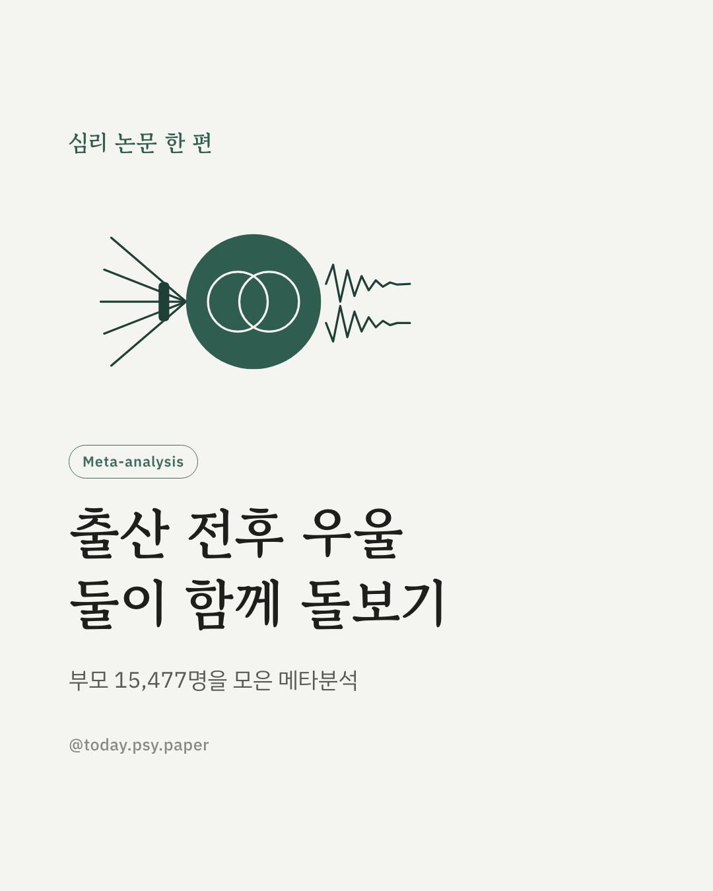
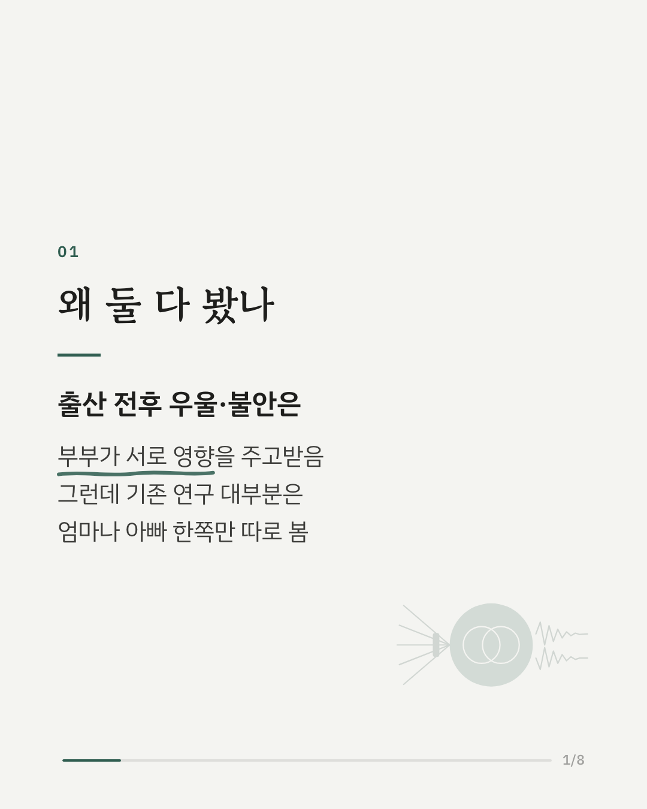
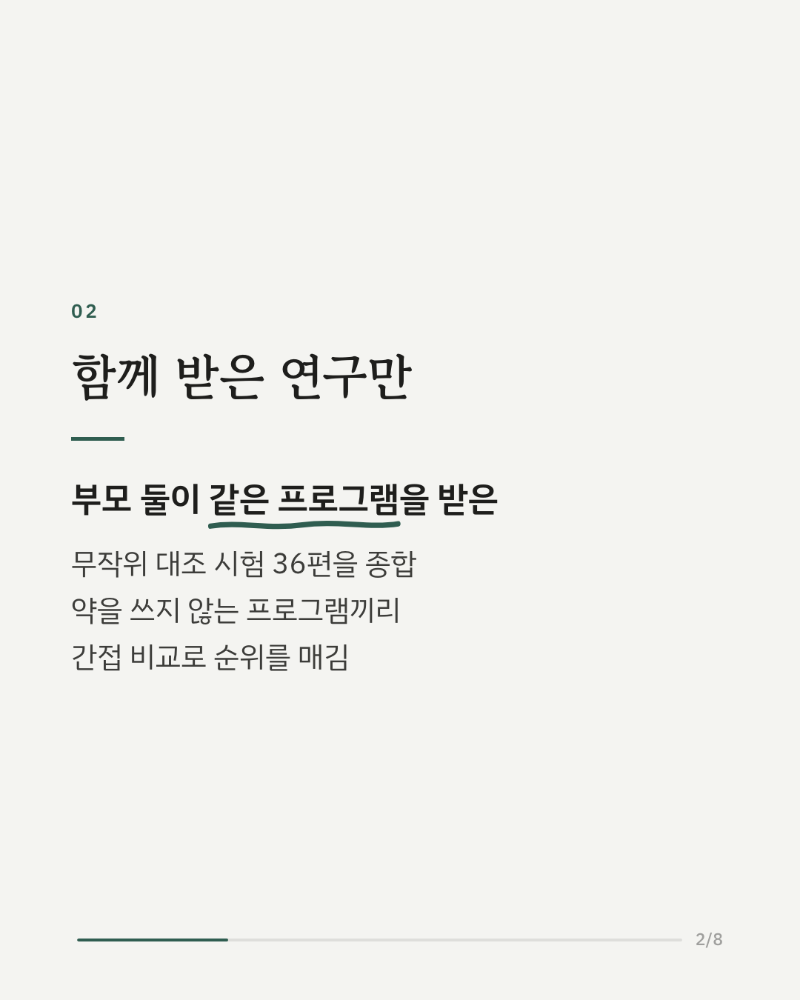
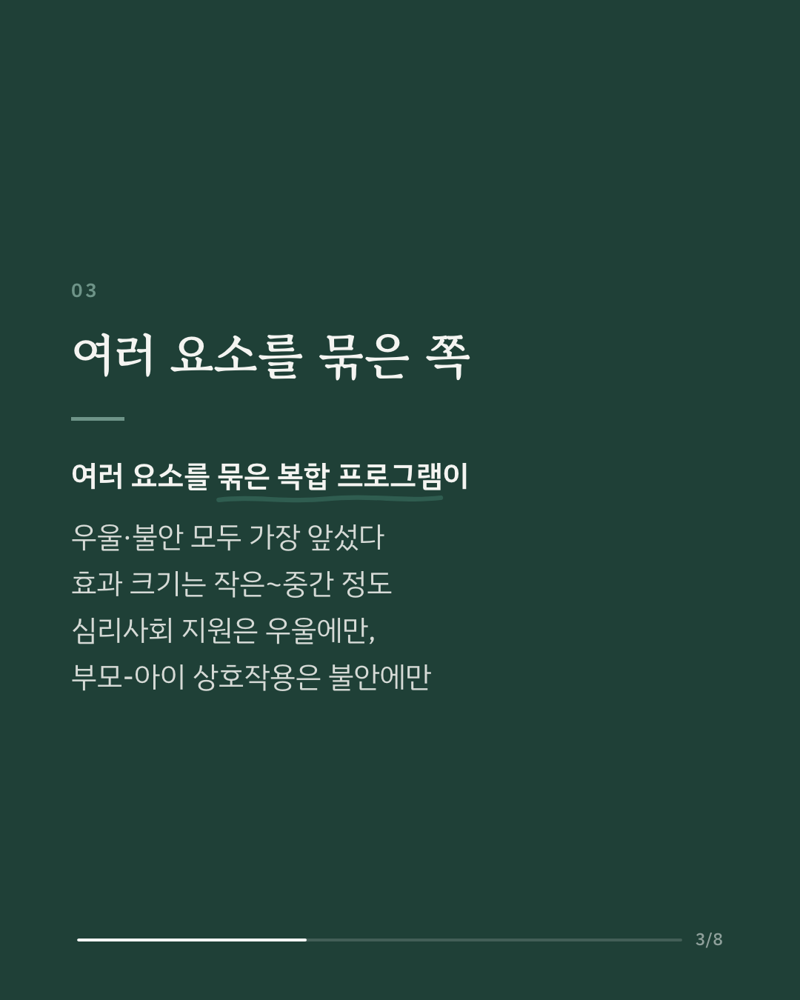
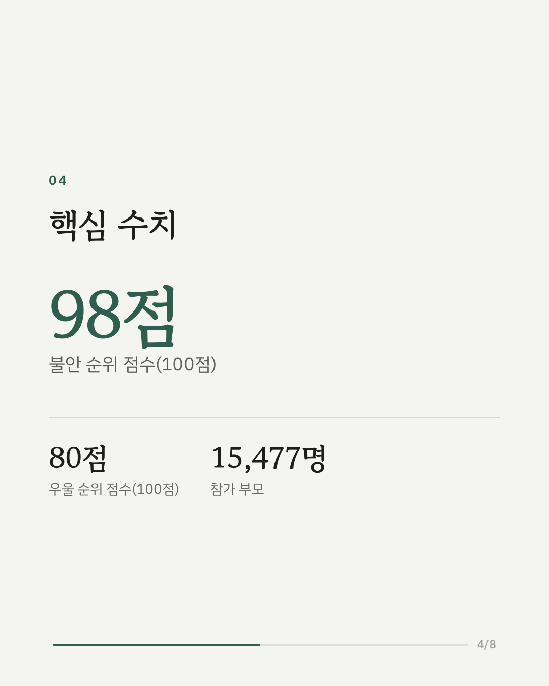
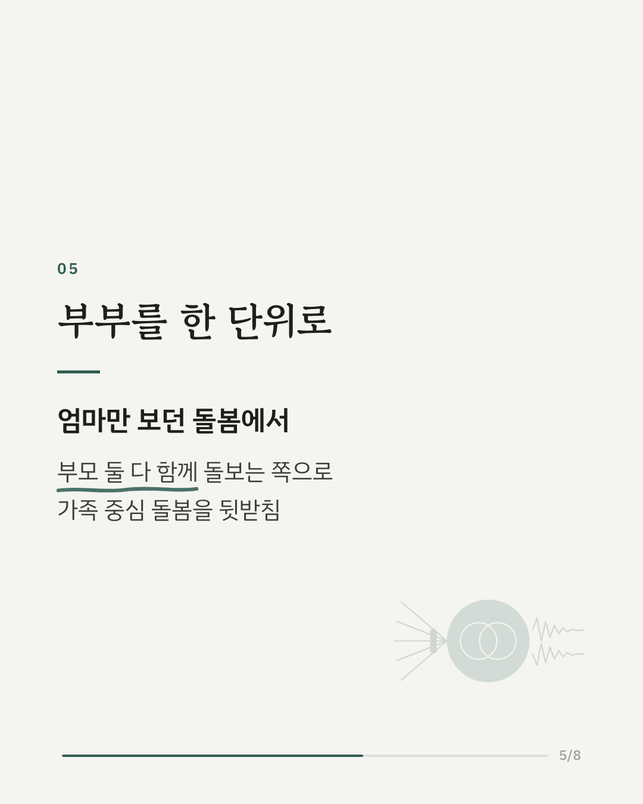
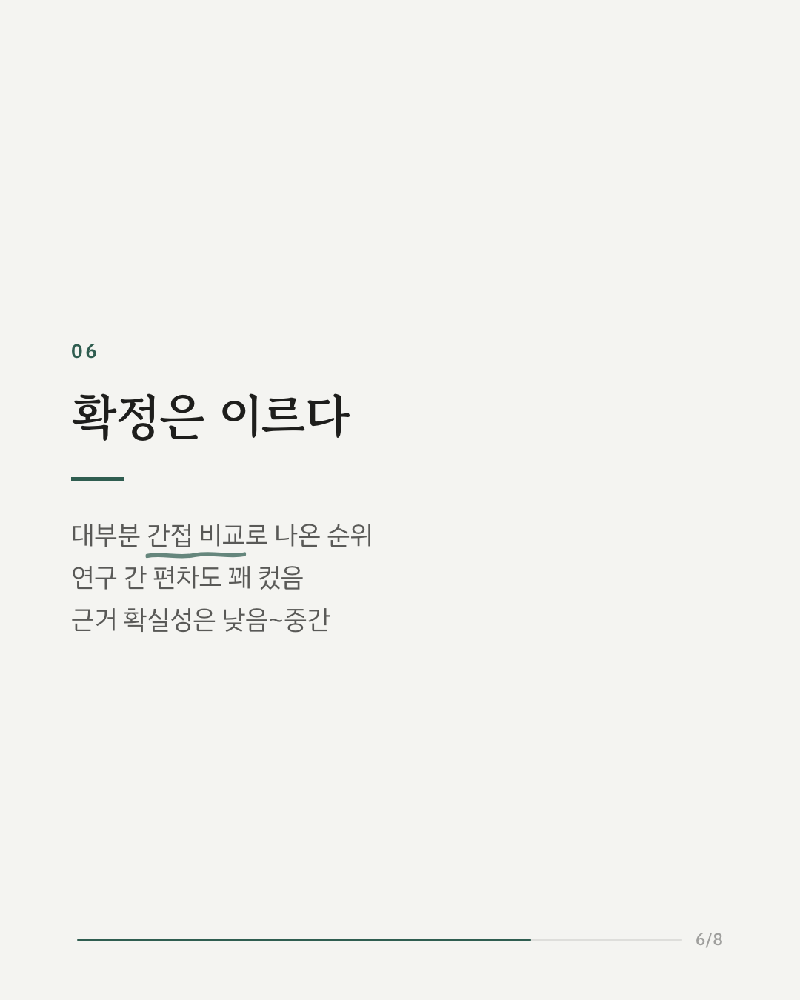
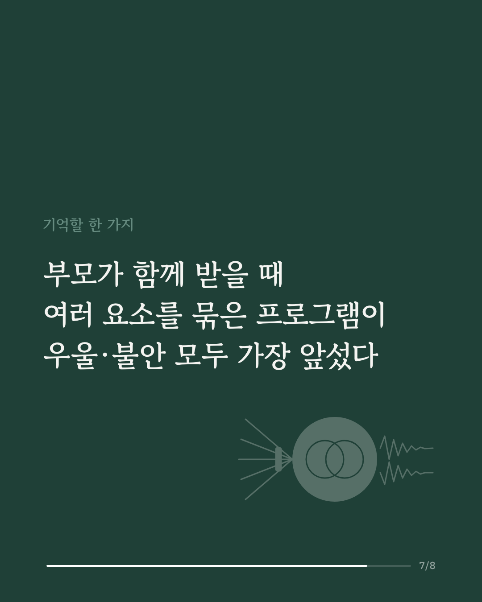
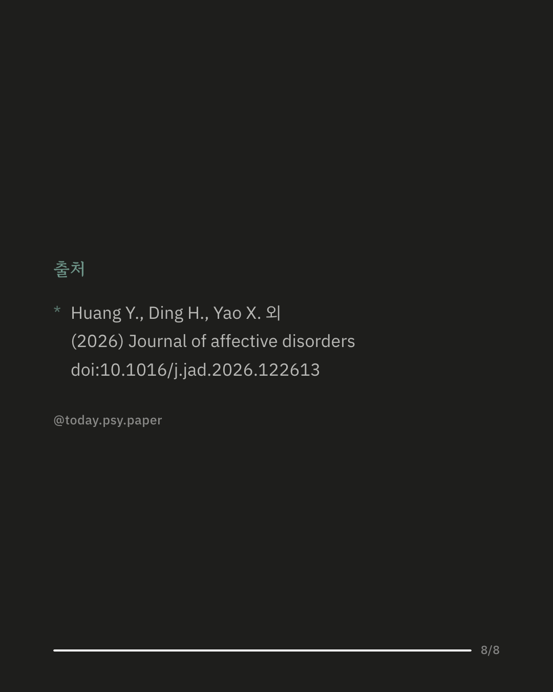

임신과 출산 전후의 우울증과 불안은 엄마 혼자만의 문제가 아닙니다. 한쪽 부모의 상태가 다른 쪽에 영향을 주는데도, 지금까지의 연구는 대부분 엄마나 아빠 한쪽만 따로 살펴봤습니다. 이 연구는 부모 두 사람이 약을 쓰지 않는 같은 프로그램을 함께 받은 무작위 대조 시험 36편(부모 15,477명)을 모아 네트워크 메타분석으로 비교했습니다. 여러 요소를 묶은 복합 프로그램이 우울과 불안 모두에서 가장 높은 순위를 보였고, 효과 크기는 작은 편에서 중간 정도였습니다. 심리사회 지원은 우울에서, 부모-아이 상호작용 프로그램은 불안에서만 도움이 되는 것으로 나타났습니다. 출산 전후 돌봄에 부모 두 사람을 함께 포함하는 가족 중심 접근을 뒷받침하는 결과입니다. 다만 프로그램끼리 직접 맞붙인 연구가 드물어 순위 대부분이 간접 비교로 추정됐고, 근거의 확실성은 낮음에서 중간 수준이었습니다. 출처: Journal of Affective Disorders (2026), 'Non-pharmacological interventions for perinatal parental depression and anxiety: a systematic review and network meta-analysis' DOI: 10.1016/j.jad.2026.122613 #임상심리 #정신건강정보 #심리학연구 #논문리뷰 #산후우울증 #임신우울증 #육아스트레스 #아빠육아
python3 publish.py 42854786